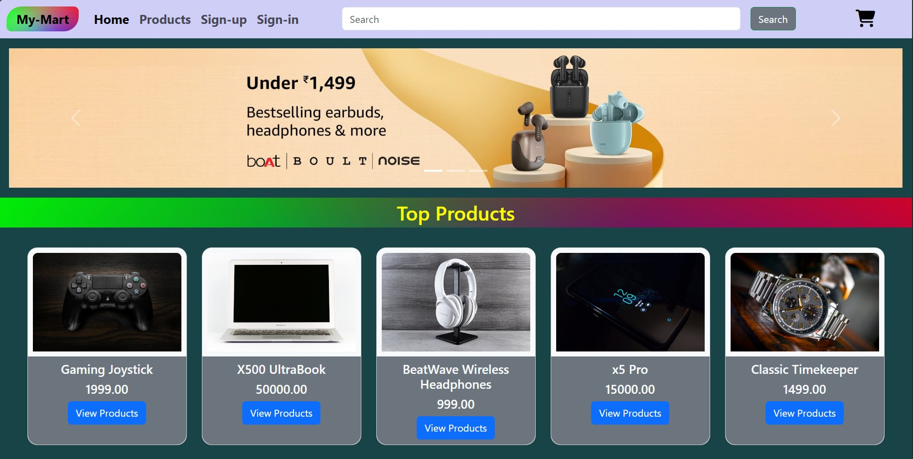

Skills
Proficient in :
Technical Skills
Project 1 (E-comm website)
My-Mart is a user-friendly website designed to streamline the online shopping experience. It incorporates essential functionalities that cater to both casual shoppers and sellers, enabling users to browse, manage, and interact with products effortlessly.
My-MartProject 2
My-Mart is a user-friendly website designed to streamline the online shopping experience. It incorporates essential functionalities that cater to both casual shoppers and sellers, enabling users to browse, manage, and interact with products effortlessly.
My-MartProject 3
My-Mart is a user-friendly website designed to streamline the online shopping experience. It incorporates essential functionalities that cater to both casual shoppers and sellers, enabling users to browse, manage, and interact with products effortlessly.
My-Mart